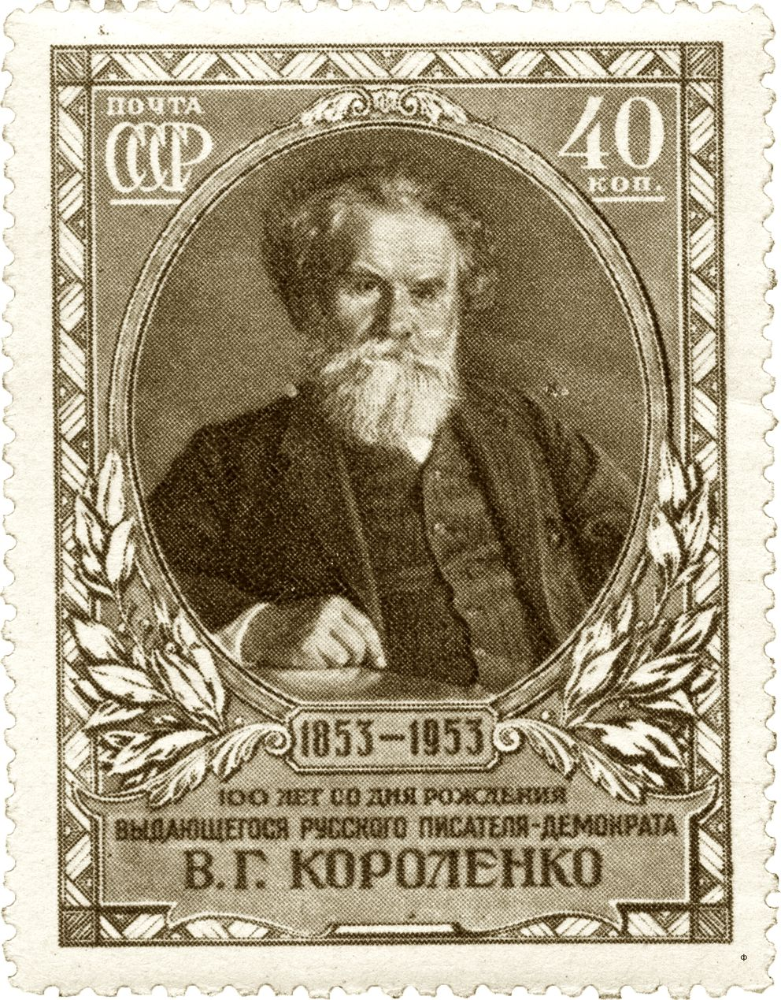

Politik
Gemeinde
Ohne Wille kein Weg Am 22.09.2015 war die letzte Gemeinderatsversammlung. Wie immer wurde die Sitzung sehr kurzfristig bekanntgegeben und we…
Seite lesen →
Kreis
Tourismusentwicklungsgebiet Lassaner Winkel ade? Es gab Prioritätenlisten der alten Kreise OVP, Ueckermünde und im aufgespaltenen Landkreis …
Seite lesen →
MV
Themenseite öffnen →
Seite lesen →
Welt
„Wer auf die Exportnation Deutschland stolz ist, darf das auch im Wehrtechnikgeschäft sein.“ „Hier sei mehr Mut „wünschenswert“ CDU/CSU (AG …
Seite lesen →
Freiheit
Freiheit statt Vollbeschäftigung Ich war lange Tagesmutter in Mecklenburg Vorpommern und erlebte die Arbeitswelt aus der Kinderperspektive: …
Seite lesen →
 Wladimir Kokorlenko der erste russische Bürgerrechtler!
Wladimir Kokorlenko der erste russische Bürgerrechtler!
Der 1853 in der Ukraine geborene russische Schriftsteller, der Vater Russe, die Mutter Polin, erlebte schon als Kind die nationalen Widersprüche. Er suchte die Lösung in einem tiefen Humanismus, dem er sein ganzes Leben treu blieb. Als Jugendlicher sympatisierte er mit der Volkstümlerbewegung. Die jungen Intellektuellen wollten durch Bildung das Leben der Menschen auf dem Land verbessern helfen. Nachdem das zaristische Regime sie dafür verfolgte und misshandelte, gingen sie zum individuellen Terror über. Von solcher Gewaltanwendung distanzierte sich Korolenko strikt. Er wird kein Mitglied einer Partei oder nationalen Strömung. Er sagt: „Ich bin einfach ein unparteiischer Schriftsteller, der für Recht und Freiheit für alle Bürger unseres Vaterlandes schwärmt und als Kämpfer überall dort auftritt, wo Recht und Freiheit verletzt werden. „Davon hat ihn selbst eine jahrelange Verbannung in zaristischen Gefängnissen und entlegendste Regionen Sibiriens nicht abbringen können. Danach nahm er seinen Wohnsitz in Poltawa und wirkte in diesem bürgerrechtlichen Sinne als Schriftsteller, Journalist und Redakteur mit Wort und Tat. Korolenko war in Russland eine moralische Institution. Er hat in schwierigsten Zeiten viel für Recht und Freiheit getan. Er kämpfte für Meinungs- und Pressefreiheit, gegen Hunger und Elend und Kinderarmut. Er trat auf gegen die Todesstrafe, gegen ethnische und Judenpogrome. Er unterstützte revolutionäre soziale Veränderungen, lehnte aber extremistische und gewaltsame Methoden ab. Bereits 1920 begründete er ausführlich in zur Veröffentlichung gedachten Briefen an A. Lunartscharski, warum die Revolution von 1917 scheitern wird, wenn die Bolschewiki ihre Politik nicht ändern. Seine Briefe wurden nicht veröffentlicht. Sie erschienen 1922 in Paris und in Moskau erst 1988. Die gegenwärtigen Erörterungen zum 100. Jahrestag der Oktoberrevolution sind eine Bestätigung von Korolenkos Weitsicht. Seine damalige Gesellschaftsvision enthält viele Denkanstöße von aktueller Bedeutung.
Gemeinde
Ohne Wille kein Weg Am 22.09.2015 war die letzte Gemeinderatsversammlung. Wie immer wurde die Sitzung sehr kurzfristig bekanntgegeben und we…
Seite lesen →Kreis
Tourismusentwicklungsgebiet Lassaner Winkel ade? Es gab Prioritätenlisten der alten Kreise OVP, Ueckermünde und im aufgespaltenen Landkreis …
Seite lesen →MV
Themenseite öffnen →
Seite lesen →Welt
„Wer auf die Exportnation Deutschland stolz ist, darf das auch im Wehrtechnikgeschäft sein.“ „Hier sei mehr Mut „wünschenswert“ CDU/CSU (AG …
Seite lesen →Freiheit
Freiheit statt Vollbeschäftigung Ich war lange Tagesmutter in Mecklenburg Vorpommern und erlebte die Arbeitswelt aus der Kinderperspektive: …
Seite lesen →Helmut Hauck

Tollensetaler Stimme 2017/09, S. 10